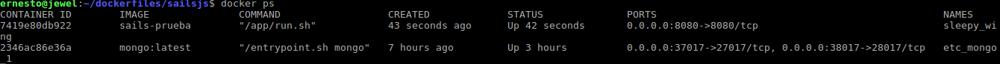
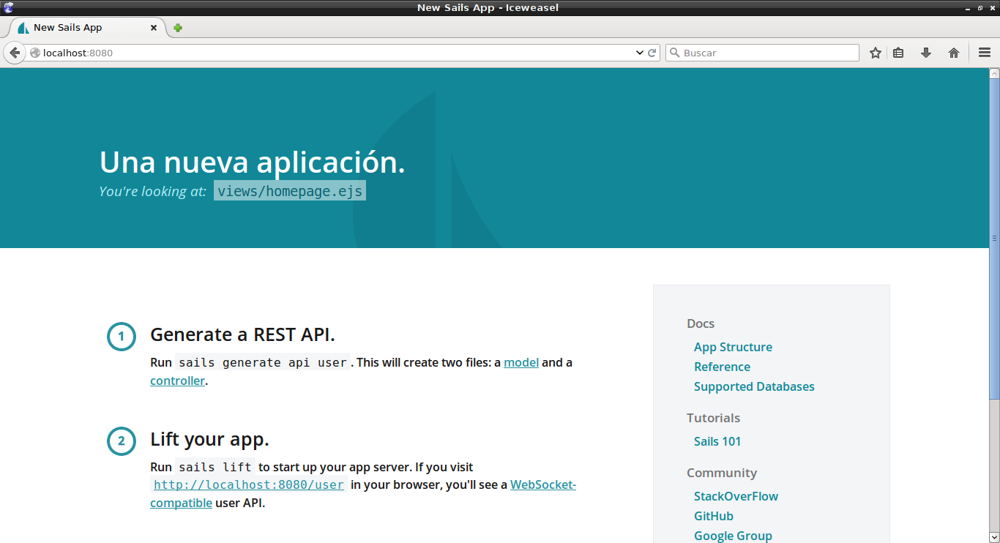

Crear un contenedor Docker como entorno de desarrollo para sails.js
Posted on Tue 24 May 2016 in Tutorial de Docker • 4 min read
Este artículo toca el tema de usar un contenedor Docker como entorno de Desarrollo.
La idea es tener las dependencias del proyecto en el contenedor y poder desarrollar la aplicación fuera del contenedor por medio de persistencia como un volumen.
Este artículo se basa en la info del siguiente repositorio en github.
En este artículo se usa el framework sails.js, pero no en profundidad, simplemente crear el proyecto y ejecutarlo. Para más información pueden revisar el siguiente tutorial.
Los artículos anteriores sobre Docker son:
-
Iniciando Django con docker usando docker-compose con postgresql como microservicio.
-
Crear un entorno de Integración y Despligue continue con Docker para node.js.
-
Ejecutar una prueba de unittest en Python con un contenedor Docker.
-
Montar una Plataforma como servicio (PaaS) con Dokku (docker).
-
Instalar Jenkins por medio de Docker y crear una imagen Docker de Jenkins
Se tiene un directorio ProyectoNuevo el cual es el proyecto sails.js creado con el comando:
sails new ProyectoNuevo
ProyectoNuevo
├── api
│ ├── controllers
│ ├── models
│ ├── policies
│ │ └── sessionAuth.js
│ ├── responses
│ │ ├── badRequest.js
│ │ ├── created.js
│ │ ├── forbidden.js
│ │ ├── notFound.js
│ │ ├── ok.js
│ │ └── serverError.js
│ └── services
├── app.js
├── assets
│ ├── favicon.ico
│ ├── images
│ ├── js
│ │ └── dependencies
│ │ └── sails.io.js
│ ├── robots.txt
│ ├── styles
│ │ └── importer.less
│ └── templates
├── config
│ ├── blueprints.js
│ ├── bootstrap.js
│ ├── connections.js
│ ├── cors.js
│ ├── csrf.js
│ ├── env
│ │ ├── development.js
│ │ └── production.js
│ ├── globals.js
│ ├── http.js
│ ├── i18n.js
│ ├── locales
│ │ ├── de.json
│ │ ├── en.json
│ │ ├── es.json
│ │ ├── fr.json
│ │ └── _README.md
│ ├── local.js
│ ├── log.js
│ ├── models.js
│ ├── policies.js
│ ├── routes.js
│ ├── session.js
│ ├── sockets.js
│ └── views.js
├── Gruntfile.js
├── package.json
├── README.md
├── tasks
│ ├── config
│ │ ├── clean.js
│ │ ├── coffee.js
│ │ ├── concat.js
│ │ ├── copy.js
│ │ ├── cssmin.js
│ │ ├── jst.js
│ │ ├── less.js
│ │ ├── sails-linker.js
│ │ ├── sync.js
│ │ ├── uglify.js
│ │ └── watch.js
│ ├── pipeline.js
│ ├── README.md
│ └── register
│ ├── build.js
│ ├── buildProd.js
│ ├── compileAssets.js
│ ├── default.js
│ ├── linkAssetsBuild.js
│ ├── linkAssetsBuildProd.js
│ ├── linkAssets.js
│ ├── prod.js
│ └── syncAssets.js
└── views
├── 403.ejs
├── 404.ejs
├── 500.ejs
├── homepage.ejs
└── layout.ejs
El directorio donde se encuentra el proyecto se llama sailsjs con el siguiente contenido:
sailsjs
├── Dockerfile
├── ProyectoNuevo
└── run.sh
El contenido de ProyectoNuevo se mostró arriba.
El archivo run.sh contiene un script para levantar sails por medio de sails lift:
#!/bin/bash
cd /app/ProyectoNuevo
sails lift
El archivo Dockerfile contiene lo siguiente:
#Se usa la imagen de nodejs de google
FROM google/nodejs
#El mantenedor de la imagen
MAINTAINER Ernesto Crespo <ecrespo@gmail.com>
#El usuario del contenedor
USER root
#Se define el directorio de trabajo
WORKDIR /app
#Se copia el ProyectoNuevo a /app/
ADD ProyectoNuevo /app/
#Se instala sails en el contenedor
RUN npm -g install sails
#Se copia el script run.sh al directorio de trabajo
ADD run.sh /app/run.sh
#Se coloca el script con permiso de ejecución
RUN chmod a+x /app/run.sh
#Se expone el puerto 8080
EXPOSE 8080
#Se ejecuta el script
CMD ["/app/run.sh"]
Para construir la imagen se ejecuta:
docker build -t sails-prueba .
Para correr la imagen se ejecuta:
docker run -p 8080:8080 -v $PWD:/app -ti sails-prueba
A continuación se muestra una imagen luego de la ejecución del comando:

Se listan los contenedores:

Se está ejecutando el contenedor de sails junto al de mongodb ya explicado en el capítulo anterior.
Ahora se abre el navegador en localhost al puerto 8080:

La idea al colocar el directorio persistente es que se pueda ir modificando el directorio del proyecto, levantar el contenedor sin necesidad de reconstruir la imagen del mismo.
¡Haz tu donativo! Si te gustó el artículo puedes realizar un donativo con Bitcoin (BTC) usando la billetera digital de tu preferencia a la siguiente dirección: 17MtNybhdkA9GV3UNS6BTwPcuhjXoPrSzV
O Escaneando el código QR desde la billetera: